Longer Differences and Smoothing
One way to reduce $\sigma_k/\sigma_R$ is to reduce noise in new cases by
taking a longer difference or smoothing case counts in some other way.
How does this affect the estimation and interpretation of $R_t$?
As in the first section, we start with the approximate recursive
relation If we instead look at a longer difference, where $\overline {T_{t,L} e^{\gamma(R_{t,L} - 1)}}$ is some
intermediate value in between the minimum and maximum of the
${ \frac{\tau(t-i)}{\tau(t-i-1)} e^{\gamma (R_{t-i} - 1)} }_{i=0}^{L-1}$.
If testing is constant over time, we can then obtain an interpretable
$\overline{R_{t,L}}$ by using $k_{t,L} =\log(C(t)-C(t-L))$ and following
the procedure above.
If testing varies with time, it becomes hard to separate testing rate
changes from $R_t$ after taking long differnces.
Note
The same analysis can be applied to other smoothing operations, i.e. using
in place of $C(t) - C(t-L)$. However, there’s something strange
about smoothing $C_t$, and then extracting a smoothed component of
it using the Kalman filter. The inference afterwards is suspect;
we would essentially be estimating a kernel regression of $C_t$ on
time, and using the estimated regression as though it’s known with
certainty.
When would long differences reduce variance? Well if
$\Delta C(t) = \Delta C^\ast(t) + \epsilon_t$ with $\epsilon_t$
indepenedent over time with mean $0$ and constant variance, then you
would need $C^\ast(t) - C^\ast(t-L)$ to increase faster than linearly
with $L$. This is true if $C^\ast$ is growing exponentially.
Alternatively, if $\epsilon_t$ is not independent over time, but
negatively correlated (as seems likely), then variance can decrease with
$L$. For example, if $\Delta C(t) = C^\ast(t) - C^\ast(t-\delta)$ with
$\delta$ a random, independent increment with mean $1$, then variance
will tend to decrease with $L$ regardless of $C^\ast(t)$.
Results
# data prep
using CovidData
using CovidRt
using TransformVariables, Parameters, Plots, StatsPlots, DataFrames, Dates, LinearAlgebra, Distributions, Random, LogDensityProblems, DynamicHMC, MCMCChains, JLD2, Latexify
Plots.pyplot()
df = CovidData.statedata(policies=:indicators, fillmissingmobility=true)
pvars = [Symbol("Stay.at.home..shelter.in.place"),
#Symbol("State.of.emergency"),
Symbol("Date.closed.K.12.schools"),
Symbol("Closed.gyms"),
Symbol("Closed.movie.theaters"),
Symbol("Closed.day.cares"),
Symbol("Date.banned.visitors.to.nursing.homes"),
Symbol("Closed.non.essential.businesses"),
Symbol("Closed.restaurants.except.take.out")]
mvars = [:retail_and_recreation_percent_change_from_baseline,
:grocery_and_pharmacy_percent_change_from_baseline,
:parks_percent_change_from_baseline ,
:transit_stations_percent_change_from_baseline,
:workplaces_percent_change_from_baseline,
:residential_percent_change_from_baseline,
:percentchangebusinesses]
df[!,:logpopdens] = log.(df[!,Symbol("Population.density.per.square.miles")])
df[!,:weekend] = dayofweek.(df[!,:date]) .>= 6
x0vars=[:constant, :logpopdens,
Symbol("Percent.Unemployed..2018."),
Symbol("Percent.living.under.the.federal.poverty.line..2018."),
Symbol("Percent.at.risk.for.serious.illness.due.to.COVID")]
sdf = filter(x->x.fips<60, df)
sdf = sort(sdf, (:state, :date))
sdf[!,mvars] ./= 100
sdf[!,:constant] .= 1
xvars = vcat(pvars,mvars, x0vars);
Here, we will allow the initial and time varying mean of $R_{s,t}$ to
depend on covariates.
We present estimates of $R_t$ with
and
for a variety of values of $L_1$ and $L_2$
reestimate=false
rlo=-1 #1 - eps(Float64)
rhi=1.2 #1+ eps(Float64)
K = length(xvars)
priors = (γ = truncated(Normal(1/7,1/7), 1/28, 1/1),
σR0 = truncated(Normal(1, 3), 0, Inf),
α0 = MvNormal(zeros(length(x0vars)), sqrt(10)), #truncated(Normal(1, 3), 0, Inf),
σR = truncated(Normal(0.25,1),0,Inf),
σk = truncated(Normal(0.1, 5), 0, Inf),
ρ = Uniform(rlo, rhi),
α = MvNormal(zeros(K), sqrt(10))
)
states_to_plot = ["New York", "New Jersey","Massachusetts","California",
"Georgia","Illinois","Michigan",
"Ohio","Wisconsin","Washington"]
warmup = default_warmup_stages(local_optimization=nothing,
stepsize_search=nothing,
init_steps=100, middle_steps=100,
terminating_steps=2*100,
doubling_stages=3, M=Symmetric)
for L1 in [1, 3, 7]
for L2 in [1, 3, 7]
mdl = CovidRt.RtModel(sdf, Symbol("cases.nyt"), xvars, x0vars,
priors; L1=L1, L2=L2,
time0=r->(r[Symbol("cases.nyt")].>=5))
estfile = "rt$(L1)_$(L2).jld2"
if !isfile(estfile) || reestimate
post = CovidRt.mcmc(mdl; iterations=2000, warmup=warmup)
@save estfile post
end
@load estfile post
cc = CovidRt.MCMCChain(post, xvars, x0vars)
println("## L₁ = $(L1), L₂ = $(L2)")
println()
display(plot(cc))
println(latexify(DataFrame(describe(cc)[1]), env=:mdtable, latex=false, fmt=x->round(x, sigdigits=3)))
println(latexify(DataFrame(describe(cc)[2]), env=:mdtable, latex=false, fmt=x->round(x, sigdigits=3)))
states = mdl.id
S = length(states_to_plot)
figs = fill(plot(), S)
for (i,st) in enumerate(states_to_plot)
s = findfirst(states.==st)
figr = CovidRt.plotpostr(mdl.t[s],mdl.dlogk[s],post, mdl.X[s], mdl.X0[s])
l = @layout [a{.1h}; grid(1,1)]
figs[i] = plot(plot(annotation=(0.5,0.5, st), framestyle = :none),
plot(figr, ylim=(-1,10)), layout=l)
display(figs[i])
end
end
end
L₁ = 1, L₂ = 1
| parameters |
mean |
std |
naive_se |
mcse |
ess |
r_hat |
| γ |
0.238 |
0.0335 |
0.000749 |
0.000933 |
1130.0 |
1.0 |
| σR0 |
8.32 |
1.3 |
0.029 |
0.0353 |
1320.0 |
1.0 |
| α0(constant) |
0.0833 |
3.13 |
0.0699 |
0.0621 |
2950.0 |
1.0 |
| α0(logpopdens) |
-2.18 |
1.48 |
0.0332 |
0.0268 |
2420.0 |
1.0 |
| α0(Percent Unemployed 2018 ) |
-3.42 |
2.18 |
0.0488 |
0.0288 |
2900.0 |
1.0 |
| α0(Percent living under the federal poverty line 2018 ) |
0.697 |
1.11 |
0.0248 |
0.019 |
2890.0 |
1.0 |
| α0(Percent at risk for serious illness due to COVID) |
0.16 |
0.389 |
0.0087 |
0.00803 |
2510.0 |
1.0 |
| σR |
3.71 |
0.515 |
0.0115 |
0.0148 |
1170.0 |
1.0 |
| σk |
0.0262 |
0.0191 |
0.000428 |
0.000334 |
2370.0 |
1.0 |
| ρ |
-0.475 |
0.0166 |
0.000372 |
0.000307 |
3390.0 |
1.0 |
| α(Stay at home shelter in place) |
-0.249 |
0.159 |
0.00355 |
0.00358 |
3040.0 |
1.0 |
| α(Date closed K 12 schools) |
-0.0826 |
0.235 |
0.00526 |
0.00409 |
2540.0 |
1.0 |
| α(Closed gyms) |
-0.208 |
0.309 |
0.0069 |
0.00685 |
2550.0 |
1.0 |
| α(Closed movie theaters) |
0.124 |
0.322 |
0.0072 |
0.00762 |
2770.0 |
1.0 |
| α(Closed day cares) |
0.0223 |
0.139 |
0.0031 |
0.00217 |
2380.0 |
1.0 |
| α(Date banned visitors to nursing homes) |
-0.0253 |
0.122 |
0.00272 |
0.00217 |
3140.0 |
1.0 |
| α(Closed non essential businesses) |
-0.137 |
0.174 |
0.00389 |
0.00384 |
2810.0 |
1.0 |
| α(Closed restaurants except take out) |
0.116 |
0.276 |
0.00618 |
0.00662 |
3020.0 |
1.0 |
| α(retail and recreation percent change from baseline) |
-0.825 |
0.892 |
0.0199 |
0.0165 |
2530.0 |
1.0 |
| α(grocery and pharmacy percent change from baseline) |
0.864 |
0.68 |
0.0152 |
0.0141 |
2650.0 |
1.0 |
| α(parks percent change from baseline) |
0.238 |
0.191 |
0.00427 |
0.00338 |
3060.0 |
1.0 |
| α(transit stations percent change from baseline) |
-0.0101 |
0.776 |
0.0174 |
0.0128 |
2870.0 |
1.0 |
| α(workplaces percent change from baseline) |
-1.79 |
1.24 |
0.0277 |
0.0293 |
2990.0 |
1.0 |
| α(residential percent change from baseline) |
2.04 |
2.2 |
0.0492 |
0.0416 |
2990.0 |
1.0 |
| α(percentchangebusinesses) |
3.6 |
1.0 |
0.0225 |
0.0215 |
2050.0 |
1.0 |
| α(constant) |
-0.203 |
0.735 |
0.0164 |
0.0187 |
2930.0 |
1.0 |
| α(logpopdens) |
0.075 |
0.0441 |
0.000986 |
0.000726 |
2990.0 |
0.999 |
| α(Percent Unemployed 2018 ) |
0.124 |
0.0833 |
0.00186 |
0.00124 |
2810.0 |
1.0 |
| α(Percent living under the federal poverty line 2018 ) |
-0.039 |
0.0365 |
0.000816 |
0.000413 |
3100.0 |
1.0 |
| α(Percent at risk for serious illness due to COVID) |
0.0417 |
0.0208 |
0.000464 |
0.000489 |
2800.0 |
1.0 |
| parameters |
2.5% |
25.0% |
50.0% |
75.0% |
97.5% |
| γ |
0.182 |
0.214 |
0.236 |
0.258 |
0.31 |
| σR0 |
6.03 |
7.4 |
8.25 |
9.12 |
11.0 |
| α0(constant) |
-5.99 |
-2.06 |
0.12 |
2.33 |
6.06 |
| α0(logpopdens) |
-5.22 |
-3.12 |
-2.18 |
-1.15 |
0.743 |
| α0(Percent Unemployed 2018 ) |
-7.63 |
-4.89 |
-3.44 |
-1.99 |
0.895 |
| α0(Percent living under the federal poverty line 2018 ) |
-1.46 |
-0.0199 |
0.688 |
1.42 |
2.85 |
| α0(Percent at risk for serious illness due to COVID) |
-0.595 |
-0.0946 |
0.156 |
0.423 |
0.925 |
| σR |
2.79 |
3.36 |
3.67 |
4.04 |
4.78 |
| σk |
0.000933 |
0.0108 |
0.0225 |
0.0376 |
0.0722 |
| ρ |
-0.508 |
-0.487 |
-0.475 |
-0.464 |
-0.443 |
| α(Stay at home shelter in place) |
-0.561 |
-0.351 |
-0.243 |
-0.141 |
0.0409 |
| α(Date closed K 12 schools) |
-0.544 |
-0.233 |
-0.0781 |
0.0802 |
0.381 |
| α(Closed gyms) |
-0.789 |
-0.414 |
-0.206 |
-0.0096 |
0.404 |
| α(Closed movie theaters) |
-0.514 |
-0.083 |
0.114 |
0.342 |
0.783 |
| α(Closed day cares) |
-0.255 |
-0.0684 |
0.0255 |
0.108 |
0.289 |
| α(Date banned visitors to nursing homes) |
-0.271 |
-0.104 |
-0.0254 |
0.0546 |
0.211 |
| α(Closed non essential businesses) |
-0.486 |
-0.246 |
-0.137 |
-0.0233 |
0.21 |
| α(Closed restaurants except take out) |
-0.413 |
-0.0719 |
0.115 |
0.303 |
0.662 |
| α(retail and recreation percent change from baseline) |
-2.62 |
-1.41 |
-0.817 |
-0.23 |
0.852 |
| α(grocery and pharmacy percent change from baseline) |
-0.482 |
0.43 |
0.858 |
1.3 |
2.19 |
| α(parks percent change from baseline) |
-0.139 |
0.106 |
0.235 |
0.366 |
0.625 |
| α(transit stations percent change from baseline) |
-1.52 |
-0.532 |
-0.0456 |
0.52 |
1.56 |
| α(workplaces percent change from baseline) |
-4.22 |
-2.62 |
-1.79 |
-0.966 |
0.585 |
| α(residential percent change from baseline) |
-2.18 |
0.592 |
2.0 |
3.47 |
6.4 |
| α(percentchangebusinesses) |
1.71 |
2.9 |
3.57 |
4.27 |
5.65 |
| α(constant) |
-1.72 |
-0.668 |
-0.198 |
0.306 |
1.19 |
| α(logpopdens) |
-0.00984 |
0.0462 |
0.0738 |
0.104 |
0.165 |
| α(Percent Unemployed 2018 ) |
-0.0336 |
0.0683 |
0.122 |
0.179 |
0.288 |
| α(Percent living under the federal poverty line 2018 ) |
-0.113 |
-0.063 |
-0.0372 |
-0.015 |
0.0308 |
| α(Percent at risk for serious illness due to COVID) |
0.00243 |
0.0276 |
0.0408 |
0.0551 |
0.0831 |
L₁ = 1, L₂ = 3
| parameters |
mean |
std |
naive_se |
mcse |
ess |
r_hat |
| γ |
0.115 |
0.0441 |
0.000986 |
0.00585 |
44.0 |
1.0 |
| σR0 |
8.24 |
2.3 |
0.0515 |
0.226 |
67.4 |
1.0 |
| α0(constant) |
0.246 |
3.1 |
0.0693 |
0.119 |
727.0 |
1.0 |
| α0(logpopdens) |
0.979 |
2.0 |
0.0447 |
0.0765 |
944.0 |
1.0 |
| α0(Percent Unemployed 2018 ) |
2.3 |
2.39 |
0.0535 |
0.093 |
1490.0 |
1.0 |
| α0(Percent living under the federal poverty line 2018 ) |
-0.969 |
1.72 |
0.0384 |
0.0921 |
279.0 |
1.0 |
| α0(Percent at risk for serious illness due to COVID) |
0.581 |
0.64 |
0.0143 |
0.0467 |
147.0 |
1.0 |
| σR |
0.758 |
0.652 |
0.0146 |
0.0326 |
314.0 |
1.0 |
| σk |
0.738 |
0.02 |
0.000447 |
0.00123 |
245.0 |
1.0 |
| ρ |
0.506 |
0.218 |
0.00487 |
0.03 |
38.2 |
1.0 |
| α(Stay at home shelter in place) |
-2.44 |
1.3 |
0.029 |
0.213 |
42.3 |
1.02 |
| α(Date closed K 12 schools) |
0.227 |
0.921 |
0.0206 |
0.078 |
82.0 |
1.02 |
| α(Closed gyms) |
-1.06 |
1.13 |
0.0252 |
0.0727 |
189.0 |
1.0 |
| α(Closed movie theaters) |
0.344 |
1.19 |
0.0265 |
0.0756 |
331.0 |
1.0 |
| α(Closed day cares) |
-0.108 |
0.677 |
0.0151 |
0.0735 |
61.5 |
1.0 |
| α(Date banned visitors to nursing homes) |
-0.312 |
0.585 |
0.0131 |
0.0715 |
52.1 |
1.0 |
| α(Closed non essential businesses) |
-1.07 |
0.923 |
0.0206 |
0.0965 |
76.2 |
1.0 |
| α(Closed restaurants except take out) |
0.322 |
1.06 |
0.0237 |
0.0986 |
86.8 |
1.02 |
| α(retail and recreation percent change from baseline) |
0.345 |
2.12 |
0.0473 |
0.1 |
614.0 |
1.0 |
| α(grocery and pharmacy percent change from baseline) |
1.38 |
2.57 |
0.0575 |
0.332 |
65.7 |
1.02 |
| α(parks percent change from baseline) |
0.149 |
0.698 |
0.0156 |
0.0477 |
210.0 |
1.0 |
| α(transit stations percent change from baseline) |
2.47 |
2.33 |
0.0522 |
0.244 |
64.3 |
1.0 |
| α(workplaces percent change from baseline) |
-4.29 |
2.23 |
0.0499 |
0.121 |
367.0 |
1.0 |
| α(residential percent change from baseline) |
4.09 |
2.94 |
0.0658 |
0.252 |
104.0 |
1.01 |
| α(percentchangebusinesses) |
6.13 |
2.18 |
0.0487 |
0.134 |
251.0 |
1.0 |
| α(constant) |
0.265 |
2.1 |
0.0471 |
0.151 |
242.0 |
1.0 |
| α(logpopdens) |
0.536 |
0.318 |
0.00711 |
0.0443 |
38.5 |
1.0 |
| α(Percent Unemployed 2018 ) |
0.759 |
0.492 |
0.011 |
0.0548 |
59.9 |
1.02 |
| α(Percent living under the federal poverty line 2018 ) |
-0.245 |
0.177 |
0.00395 |
0.0165 |
90.9 |
1.0 |
| α(Percent at risk for serious illness due to COVID) |
0.0938 |
0.1 |
0.00224 |
0.0113 |
55.4 |
1.0 |
| parameters |
2.5% |
25.0% |
50.0% |
75.0% |
97.5% |
| γ |
0.0366 |
0.0915 |
0.119 |
0.141 |
0.203 |
| σR0 |
2.38 |
6.98 |
8.34 |
9.67 |
12.5 |
| α0(constant) |
-5.53 |
-1.85 |
0.107 |
2.36 |
6.65 |
| α0(logpopdens) |
-2.65 |
-0.354 |
0.904 |
2.2 |
5.35 |
| α0(Percent Unemployed 2018 ) |
-2.4 |
0.69 |
2.4 |
3.84 |
6.99 |
| α0(Percent living under the federal poverty line 2018 ) |
-3.95 |
-2.09 |
-1.09 |
0.0518 |
2.87 |
| α0(Percent at risk for serious illness due to COVID) |
-0.743 |
0.18 |
0.589 |
1.02 |
1.77 |
| σR |
0.0328 |
0.262 |
0.57 |
1.09 |
2.45 |
| σk |
0.686 |
0.73 |
0.741 |
0.751 |
0.768 |
| ρ |
0.175 |
0.352 |
0.461 |
0.59 |
0.927 |
| α(Stay at home shelter in place) |
-6.69 |
-2.83 |
-2.11 |
-1.6 |
-0.89 |
| α(Date closed K 12 schools) |
-1.29 |
-0.36 |
0.143 |
0.705 |
2.42 |
| α(Closed gyms) |
-3.29 |
-1.74 |
-1.08 |
-0.406 |
1.29 |
| α(Closed movie theaters) |
-2.02 |
-0.341 |
0.347 |
1.07 |
2.66 |
| α(Closed day cares) |
-1.85 |
-0.419 |
-0.0543 |
0.309 |
1.04 |
| α(Date banned visitors to nursing homes) |
-1.71 |
-0.572 |
-0.242 |
0.058 |
0.686 |
| α(Closed non essential businesses) |
-3.66 |
-1.41 |
-0.929 |
-0.528 |
0.205 |
| α(Closed restaurants except take out) |
-2.05 |
-0.254 |
0.352 |
0.957 |
2.38 |
| α(retail and recreation percent change from baseline) |
-3.73 |
-1.05 |
0.341 |
1.69 |
4.52 |
| α(grocery and pharmacy percent change from baseline) |
-5.83 |
0.152 |
1.53 |
2.91 |
6.1 |
| α(parks percent change from baseline) |
-1.27 |
-0.252 |
0.134 |
0.579 |
1.52 |
| α(transit stations percent change from baseline) |
-2.72 |
1.07 |
2.62 |
4.0 |
6.62 |
| α(workplaces percent change from baseline) |
-8.74 |
-5.69 |
-4.29 |
-2.78 |
-0.0176 |
| α(residential percent change from baseline) |
-1.14 |
1.99 |
4.17 |
6.15 |
9.99 |
| α(percentchangebusinesses) |
1.76 |
4.71 |
6.1 |
7.62 |
10.3 |
| α(constant) |
-3.77 |
-1.06 |
0.153 |
1.49 |
5.02 |
| α(logpopdens) |
0.119 |
0.329 |
0.453 |
0.637 |
1.34 |
| α(Percent Unemployed 2018 ) |
0.0668 |
0.476 |
0.688 |
0.927 |
2.38 |
| α(Percent living under the federal poverty line 2018 ) |
-0.579 |
-0.35 |
-0.252 |
-0.151 |
0.138 |
| α(Percent at risk for serious illness due to COVID) |
-0.197 |
0.0563 |
0.105 |
0.153 |
0.245 |
L₁ = 1, L₂ = 7
| parameters |
mean |
std |
naive_se |
mcse |
ess |
r_hat |
| γ |
0.104 |
0.0197 |
0.000441 |
0.000482 |
1040.0 |
1.0 |
| σR0 |
8.77 |
1.55 |
0.0346 |
0.0345 |
1460.0 |
1.0 |
| α0(constant) |
0.4 |
3.14 |
0.0703 |
0.087 |
2070.0 |
1.0 |
| α0(logpopdens) |
-0.365 |
1.2 |
0.0269 |
0.0285 |
1740.0 |
1.0 |
| α0(Percent Unemployed 2018 ) |
1.22 |
1.91 |
0.0426 |
0.0439 |
1750.0 |
1.0 |
| α0(Percent living under the federal poverty line 2018 ) |
-0.673 |
0.894 |
0.02 |
0.023 |
1770.0 |
1.0 |
| α0(Percent at risk for serious illness due to COVID) |
0.751 |
0.352 |
0.00788 |
0.00705 |
2010.0 |
1.0 |
| σR |
2.33 |
0.424 |
0.00949 |
0.00884 |
1220.0 |
1.0 |
| σk |
0.713 |
0.0128 |
0.000285 |
0.000314 |
2210.0 |
1.0 |
| ρ |
0.917 |
0.01 |
0.000224 |
0.000269 |
2360.0 |
1.0 |
| α(Stay at home shelter in place) |
-3.51 |
1.21 |
0.0271 |
0.0291 |
1500.0 |
1.0 |
| α(Date closed K 12 schools) |
2.95 |
1.37 |
0.0307 |
0.0265 |
1950.0 |
1.0 |
| α(Closed gyms) |
-0.535 |
1.75 |
0.0391 |
0.0351 |
2620.0 |
1.0 |
| α(Closed movie theaters) |
-0.821 |
1.82 |
0.0406 |
0.0391 |
2320.0 |
1.0 |
| α(Closed day cares) |
-0.28 |
1.17 |
0.0261 |
0.0297 |
1650.0 |
1.0 |
| α(Date banned visitors to nursing homes) |
-1.49 |
1.05 |
0.0234 |
0.0228 |
2130.0 |
1.0 |
| α(Closed non essential businesses) |
-2.18 |
1.23 |
0.0276 |
0.0341 |
1290.0 |
1.0 |
| α(Closed restaurants except take out) |
1.19 |
1.51 |
0.0337 |
0.0325 |
2440.0 |
1.0 |
| α(retail and recreation percent change from baseline) |
-1.37 |
2.71 |
0.0605 |
0.0689 |
2180.0 |
1.0 |
| α(grocery and pharmacy percent change from baseline) |
-1.06 |
2.38 |
0.0532 |
0.0553 |
1840.0 |
1.0 |
| α(parks percent change from baseline) |
0.533 |
0.9 |
0.0201 |
0.0173 |
2050.0 |
1.0 |
| α(transit stations percent change from baseline) |
0.492 |
2.58 |
0.0577 |
0.0488 |
2130.0 |
1.0 |
| α(workplaces percent change from baseline) |
-0.802 |
2.39 |
0.0534 |
0.0459 |
2140.0 |
1.0 |
| α(residential percent change from baseline) |
1.76 |
3.05 |
0.0681 |
0.0543 |
1640.0 |
1.0 |
| α(percentchangebusinesses) |
1.85 |
2.47 |
0.0553 |
0.0453 |
2700.0 |
1.0 |
| α(constant) |
1.06 |
2.83 |
0.0633 |
0.0607 |
2070.0 |
1.0 |
| α(logpopdens) |
1.39 |
0.559 |
0.0125 |
0.0119 |
1520.0 |
1.0 |
| α(Percent Unemployed 2018 ) |
0.133 |
0.901 |
0.0202 |
0.0223 |
2000.0 |
1.0 |
| α(Percent living under the federal poverty line 2018 ) |
-0.0657 |
0.385 |
0.0086 |
0.00641 |
2090.0 |
1.0 |
| α(Percent at risk for serious illness due to COVID) |
-0.0798 |
0.156 |
0.0035 |
0.00311 |
2300.0 |
1.0 |
| parameters |
2.5% |
25.0% |
50.0% |
75.0% |
97.5% |
| γ |
0.0728 |
0.09 |
0.101 |
0.115 |
0.152 |
| σR0 |
5.96 |
7.7 |
8.66 |
9.77 |
11.9 |
| α0(constant) |
-5.77 |
-1.72 |
0.417 |
2.56 |
6.5 |
| α0(logpopdens) |
-2.74 |
-1.15 |
-0.384 |
0.429 |
1.98 |
| α0(Percent Unemployed 2018 ) |
-2.4 |
-0.112 |
1.18 |
2.52 |
4.95 |
| α0(Percent living under the federal poverty line 2018 ) |
-2.44 |
-1.26 |
-0.682 |
-0.0941 |
1.1 |
| α0(Percent at risk for serious illness due to COVID) |
0.0927 |
0.52 |
0.734 |
0.966 |
1.49 |
| σR |
1.56 |
2.04 |
2.32 |
2.61 |
3.2 |
| σk |
0.688 |
0.704 |
0.713 |
0.722 |
0.738 |
| ρ |
0.896 |
0.91 |
0.917 |
0.924 |
0.936 |
| α(Stay at home shelter in place) |
-5.96 |
-4.29 |
-3.44 |
-2.67 |
-1.25 |
| α(Date closed K 12 schools) |
0.372 |
2.05 |
2.88 |
3.83 |
5.83 |
| α(Closed gyms) |
-3.96 |
-1.7 |
-0.519 |
0.673 |
2.86 |
| α(Closed movie theaters) |
-4.44 |
-2.03 |
-0.808 |
0.451 |
2.59 |
| α(Closed day cares) |
-2.52 |
-1.05 |
-0.266 |
0.504 |
2.04 |
| α(Date banned visitors to nursing homes) |
-3.53 |
-2.19 |
-1.49 |
-0.751 |
0.506 |
| α(Closed non essential businesses) |
-4.74 |
-2.95 |
-2.11 |
-1.34 |
0.0364 |
| α(Closed restaurants except take out) |
-1.75 |
0.171 |
1.19 |
2.2 |
4.13 |
| α(retail and recreation percent change from baseline) |
-6.68 |
-3.23 |
-1.31 |
0.473 |
3.79 |
| α(grocery and pharmacy percent change from baseline) |
-5.76 |
-2.7 |
-1.04 |
0.52 |
3.64 |
| α(parks percent change from baseline) |
-1.18 |
-0.0583 |
0.514 |
1.12 |
2.37 |
| α(transit stations percent change from baseline) |
-4.63 |
-1.27 |
0.487 |
2.24 |
5.49 |
| α(workplaces percent change from baseline) |
-5.33 |
-2.44 |
-0.855 |
0.775 |
3.88 |
| α(residential percent change from baseline) |
-4.35 |
-0.17 |
1.79 |
3.76 |
7.77 |
| α(percentchangebusinesses) |
-3.0 |
0.16 |
1.89 |
3.55 |
6.55 |
| α(constant) |
-4.43 |
-0.815 |
1.04 |
2.99 |
6.55 |
| α(logpopdens) |
0.375 |
1.01 |
1.35 |
1.73 |
2.61 |
| α(Percent Unemployed 2018 ) |
-1.69 |
-0.463 |
0.134 |
0.746 |
1.9 |
| α(Percent living under the federal poverty line 2018 ) |
-0.84 |
-0.314 |
-0.054 |
0.184 |
0.682 |
| α(Percent at risk for serious illness due to COVID) |
-0.396 |
-0.177 |
-0.0822 |
0.0231 |
0.229 |
L₁ = 3, L₂ = 1
| parameters |
mean |
std |
naive_se |
mcse |
ess |
r_hat |
| γ |
0.0869 |
0.0176 |
0.000393 |
0.000766 |
437.0 |
1.0 |
| σR0 |
11.2 |
1.92 |
0.0429 |
0.0762 |
562.0 |
1.0 |
| α0(constant) |
0.16 |
3.18 |
0.0711 |
0.0827 |
1430.0 |
1.0 |
| α0(logpopdens) |
0.65 |
3.06 |
0.0684 |
0.0759 |
1960.0 |
1.0 |
| α0(Percent Unemployed 2018 ) |
0.534 |
3.07 |
0.0686 |
0.0697 |
1650.0 |
1.0 |
| α0(Percent living under the federal poverty line 2018 ) |
0.85 |
2.92 |
0.0653 |
0.054 |
1440.0 |
1.0 |
| α0(Percent at risk for serious illness due to COVID) |
2.52 |
1.66 |
0.037 |
0.0363 |
1210.0 |
1.0 |
| σR |
0.807 |
0.57 |
0.0128 |
0.0238 |
520.0 |
1.0 |
| σk |
0.23 |
0.0133 |
0.000298 |
0.000788 |
243.0 |
1.01 |
| ρ |
0.0669 |
0.0279 |
0.000623 |
0.000474 |
1260.0 |
1.0 |
| α(Stay at home shelter in place) |
-0.915 |
0.321 |
0.00718 |
0.0112 |
1070.0 |
1.0 |
| α(Date closed K 12 schools) |
0.239 |
0.382 |
0.00854 |
0.00689 |
2330.0 |
1.0 |
| α(Closed gyms) |
-0.373 |
0.483 |
0.0108 |
0.00748 |
2100.0 |
1.0 |
| α(Closed movie theaters) |
-0.0107 |
0.497 |
0.0111 |
0.00797 |
1930.0 |
1.0 |
| α(Closed day cares) |
-0.0175 |
0.235 |
0.00527 |
0.00646 |
1360.0 |
1.0 |
| α(Date banned visitors to nursing homes) |
-0.102 |
0.197 |
0.00441 |
0.00438 |
2300.0 |
1.0 |
| α(Closed non essential businesses) |
-0.473 |
0.288 |
0.00644 |
0.00715 |
1480.0 |
1.0 |
| α(Closed restaurants except take out) |
0.0633 |
0.419 |
0.00938 |
0.00819 |
1970.0 |
1.0 |
| α(retail and recreation percent change from baseline) |
-0.279 |
1.3 |
0.0291 |
0.0314 |
1970.0 |
1.0 |
| α(grocery and pharmacy percent change from baseline) |
1.79 |
1.09 |
0.0243 |
0.0278 |
1810.0 |
1.0 |
| α(parks percent change from baseline) |
-0.0168 |
0.273 |
0.0061 |
0.00616 |
2160.0 |
1.0 |
| α(transit stations percent change from baseline) |
1.92 |
1.15 |
0.0258 |
0.0348 |
1690.0 |
1.0 |
| α(workplaces percent change from baseline) |
-1.11 |
1.62 |
0.0363 |
0.0469 |
1390.0 |
1.0 |
| α(residential percent change from baseline) |
6.07 |
2.57 |
0.0575 |
0.065 |
1790.0 |
1.0 |
| α(percentchangebusinesses) |
2.67 |
1.34 |
0.0299 |
0.0378 |
1200.0 |
1.0 |
| α(constant) |
0.00546 |
1.1 |
0.0246 |
0.0303 |
1430.0 |
1.0 |
| α(logpopdens) |
0.218 |
0.0815 |
0.00182 |
0.00217 |
1420.0 |
1.0 |
| α(Percent Unemployed 2018 ) |
0.365 |
0.149 |
0.00333 |
0.00469 |
1330.0 |
1.0 |
| α(Percent living under the federal poverty line 2018 ) |
-0.156 |
0.0648 |
0.00145 |
0.00191 |
1340.0 |
1.0 |
| α(Percent at risk for serious illness due to COVID) |
0.0701 |
0.0335 |
0.000748 |
0.000981 |
1240.0 |
1.0 |
| parameters |
2.5% |
25.0% |
50.0% |
75.0% |
97.5% |
| γ |
0.0585 |
0.0743 |
0.0847 |
0.0971 |
0.128 |
| σR0 |
7.76 |
9.82 |
11.1 |
12.5 |
15.2 |
| α0(constant) |
-6.3 |
-1.97 |
0.152 |
2.3 |
6.12 |
| α0(logpopdens) |
-5.3 |
-1.47 |
0.647 |
2.7 |
6.83 |
| α0(Percent Unemployed 2018 ) |
-5.5 |
-1.51 |
0.592 |
2.6 |
6.32 |
| α0(Percent living under the federal poverty line 2018 ) |
-4.77 |
-1.13 |
0.809 |
2.9 |
6.55 |
| α0(Percent at risk for serious illness due to COVID) |
-0.315 |
1.37 |
2.41 |
3.49 |
6.15 |
| σR |
0.0395 |
0.347 |
0.701 |
1.15 |
2.17 |
| σk |
0.196 |
0.227 |
0.233 |
0.237 |
0.242 |
| ρ |
0.0231 |
0.0461 |
0.0638 |
0.0846 |
0.128 |
| α(Stay at home shelter in place) |
-1.66 |
-1.11 |
-0.869 |
-0.685 |
-0.396 |
| α(Date closed K 12 schools) |
-0.5 |
-0.0105 |
0.228 |
0.467 |
1.04 |
| α(Closed gyms) |
-1.39 |
-0.671 |
-0.353 |
-0.0651 |
0.585 |
| α(Closed movie theaters) |
-0.942 |
-0.333 |
-0.0111 |
0.298 |
0.971 |
| α(Closed day cares) |
-0.469 |
-0.172 |
-0.0223 |
0.139 |
0.462 |
| α(Date banned visitors to nursing homes) |
-0.511 |
-0.232 |
-0.0923 |
0.0347 |
0.271 |
| α(Closed non essential businesses) |
-1.1 |
-0.644 |
-0.451 |
-0.271 |
0.0107 |
| α(Closed restaurants except take out) |
-0.743 |
-0.201 |
0.0579 |
0.34 |
0.921 |
| α(retail and recreation percent change from baseline) |
-2.88 |
-1.12 |
-0.274 |
0.562 |
2.34 |
| α(grocery and pharmacy percent change from baseline) |
-0.234 |
1.06 |
1.74 |
2.46 |
4.03 |
| α(parks percent change from baseline) |
-0.577 |
-0.186 |
-0.0108 |
0.161 |
0.494 |
| α(transit stations percent change from baseline) |
-0.194 |
1.15 |
1.91 |
2.6 |
4.33 |
| α(workplaces percent change from baseline) |
-4.64 |
-2.18 |
-1.07 |
0.00594 |
1.92 |
| α(residential percent change from baseline) |
1.01 |
4.3 |
6.1 |
7.84 |
11.1 |
| α(percentchangebusinesses) |
0.187 |
1.75 |
2.59 |
3.5 |
5.51 |
| α(constant) |
-2.13 |
-0.683 |
0.024 |
0.712 |
2.15 |
| α(logpopdens) |
0.0712 |
0.161 |
0.212 |
0.27 |
0.389 |
| α(Percent Unemployed 2018 ) |
0.113 |
0.261 |
0.352 |
0.454 |
0.691 |
| α(Percent living under the federal poverty line 2018 ) |
-0.297 |
-0.199 |
-0.149 |
-0.109 |
-0.0489 |
| α(Percent at risk for serious illness due to COVID) |
0.00903 |
0.0469 |
0.0681 |
0.0913 |
0.14 |
L₁ = 3, L₂ = 3
| parameters |
mean |
std |
naive_se |
mcse |
ess |
r_hat |
| γ |
0.163 |
0.0254 |
0.000569 |
0.00059 |
976.0 |
1.0 |
| σR0 |
9.23 |
1.44 |
0.0322 |
0.0238 |
1330.0 |
1.0 |
| α0(constant) |
0.666 |
3.3 |
0.0737 |
0.0606 |
2930.0 |
1.0 |
| α0(logpopdens) |
-0.818 |
1.46 |
0.0326 |
0.0308 |
2820.0 |
1.0 |
| α0(Percent Unemployed 2018 ) |
1.94 |
2.05 |
0.0458 |
0.0458 |
2600.0 |
1.0 |
| α0(Percent living under the federal poverty line 2018 ) |
-1.03 |
1.08 |
0.0241 |
0.0247 |
2490.0 |
1.0 |
| α0(Percent at risk for serious illness due to COVID) |
0.402 |
0.389 |
0.00869 |
0.00776 |
2530.0 |
1.0 |
| σR |
3.25 |
0.488 |
0.0109 |
0.0104 |
1040.0 |
1.0 |
| σk |
0.0176 |
0.0134 |
0.000299 |
0.000358 |
2350.0 |
1.0 |
| ρ |
0.557 |
0.0159 |
0.000356 |
0.000227 |
2330.0 |
1.0 |
| α(Stay at home shelter in place) |
-1.47 |
0.448 |
0.01 |
0.00838 |
2190.0 |
1.0 |
| α(Date closed K 12 schools) |
-0.247 |
0.478 |
0.0107 |
0.00647 |
2660.0 |
1.0 |
| α(Closed gyms) |
-0.738 |
0.704 |
0.0157 |
0.0105 |
2640.0 |
1.0 |
| α(Closed movie theaters) |
-0.12 |
0.735 |
0.0164 |
0.0108 |
2540.0 |
1.0 |
| α(Closed day cares) |
-0.259 |
0.381 |
0.00851 |
0.00694 |
3330.0 |
1.0 |
| α(Date banned visitors to nursing homes) |
-0.273 |
0.32 |
0.00715 |
0.00645 |
2400.0 |
1.0 |
| α(Closed non essential businesses) |
-0.354 |
0.397 |
0.00887 |
0.00771 |
2350.0 |
1.0 |
| α(Closed restaurants except take out) |
0.253 |
0.547 |
0.0122 |
0.0101 |
2790.0 |
1.0 |
| α(retail and recreation percent change from baseline) |
-0.297 |
1.61 |
0.0359 |
0.0331 |
2750.0 |
1.0 |
| α(grocery and pharmacy percent change from baseline) |
1.69 |
1.28 |
0.0287 |
0.0365 |
2700.0 |
1.0 |
| α(parks percent change from baseline) |
-0.178 |
0.303 |
0.00677 |
0.00696 |
2550.0 |
1.0 |
| α(transit stations percent change from baseline) |
2.46 |
1.46 |
0.0327 |
0.0293 |
2560.0 |
1.0 |
| α(workplaces percent change from baseline) |
1.25 |
1.52 |
0.0339 |
0.0296 |
2810.0 |
0.999 |
| α(residential percent change from baseline) |
4.02 |
2.49 |
0.0556 |
0.0498 |
3260.0 |
1.0 |
| α(percentchangebusinesses) |
-0.116 |
1.16 |
0.026 |
0.0235 |
3050.0 |
1.0 |
| α(constant) |
1.5 |
1.61 |
0.0361 |
0.0292 |
2460.0 |
1.0 |
| α(logpopdens) |
0.329 |
0.138 |
0.00309 |
0.00234 |
2710.0 |
1.0 |
| α(Percent Unemployed 2018 ) |
0.386 |
0.241 |
0.00539 |
0.00391 |
2950.0 |
1.0 |
| α(Percent living under the federal poverty line 2018 ) |
-0.188 |
0.101 |
0.00226 |
0.00146 |
2890.0 |
1.0 |
| α(Percent at risk for serious illness due to COVID) |
0.0751 |
0.0501 |
0.00112 |
0.000779 |
2560.0 |
1.0 |
| parameters |
2.5% |
25.0% |
50.0% |
75.0% |
97.5% |
| γ |
0.122 |
0.145 |
0.16 |
0.177 |
0.223 |
| σR0 |
6.55 |
8.23 |
9.2 |
10.1 |
12.2 |
| α0(constant) |
-5.74 |
-1.56 |
0.664 |
2.9 |
7.24 |
| α0(logpopdens) |
-3.62 |
-1.85 |
-0.808 |
0.217 |
2.0 |
| α0(Percent Unemployed 2018 ) |
-1.99 |
0.565 |
1.95 |
3.34 |
5.9 |
| α0(Percent living under the federal poverty line 2018 ) |
-3.19 |
-1.73 |
-1.04 |
-0.309 |
1.11 |
| α0(Percent at risk for serious illness due to COVID) |
-0.359 |
0.152 |
0.394 |
0.671 |
1.21 |
| σR |
2.34 |
2.91 |
3.22 |
3.57 |
4.24 |
| σk |
0.000796 |
0.00682 |
0.0146 |
0.0248 |
0.05 |
| ρ |
0.525 |
0.547 |
0.557 |
0.568 |
0.588 |
| α(Stay at home shelter in place) |
-2.38 |
-1.78 |
-1.44 |
-1.14 |
-0.684 |
| α(Date closed K 12 schools) |
-1.18 |
-0.569 |
-0.228 |
0.0672 |
0.653 |
| α(Closed gyms) |
-2.14 |
-1.19 |
-0.74 |
-0.27 |
0.646 |
| α(Closed movie theaters) |
-1.59 |
-0.625 |
-0.116 |
0.383 |
1.3 |
| α(Closed day cares) |
-1.01 |
-0.515 |
-0.248 |
0.000724 |
0.493 |
| α(Date banned visitors to nursing homes) |
-0.961 |
-0.473 |
-0.257 |
-0.0551 |
0.329 |
| α(Closed non essential businesses) |
-1.18 |
-0.592 |
-0.336 |
-0.0883 |
0.382 |
| α(Closed restaurants except take out) |
-0.8 |
-0.113 |
0.239 |
0.617 |
1.36 |
| α(retail and recreation percent change from baseline) |
-3.4 |
-1.38 |
-0.296 |
0.762 |
2.8 |
| α(grocery and pharmacy percent change from baseline) |
-0.786 |
0.836 |
1.67 |
2.51 |
4.18 |
| α(parks percent change from baseline) |
-0.811 |
-0.369 |
-0.171 |
0.0251 |
0.405 |
| α(transit stations percent change from baseline) |
-0.239 |
1.44 |
2.46 |
3.47 |
5.39 |
| α(workplaces percent change from baseline) |
-1.71 |
0.195 |
1.27 |
2.31 |
4.26 |
| α(residential percent change from baseline) |
-0.874 |
2.31 |
4.07 |
5.72 |
8.8 |
| α(percentchangebusinesses) |
-2.4 |
-0.896 |
-0.0914 |
0.667 |
2.19 |
| α(constant) |
-1.72 |
0.437 |
1.5 |
2.58 |
4.61 |
| α(logpopdens) |
0.0734 |
0.237 |
0.32 |
0.414 |
0.626 |
| α(Percent Unemployed 2018 ) |
-0.0826 |
0.223 |
0.383 |
0.544 |
0.866 |
| α(Percent living under the federal poverty line 2018 ) |
-0.396 |
-0.252 |
-0.187 |
-0.12 |
-0.000843 |
| α(Percent at risk for serious illness due to COVID) |
-0.0203 |
0.0411 |
0.0736 |
0.108 |
0.177 |
L₁ = 3, L₂ = 7
| parameters |
mean |
std |
naive_se |
mcse |
ess |
r_hat |
| γ |
0.167 |
0.0275 |
0.000615 |
0.00109 |
783.0 |
1.0 |
| σR0 |
8.23 |
1.4 |
0.0314 |
0.0541 |
795.0 |
1.0 |
| α0(constant) |
1.23 |
3.06 |
0.0683 |
0.0557 |
3170.0 |
1.0 |
| α0(logpopdens) |
-1.22 |
1.01 |
0.0227 |
0.0273 |
1870.0 |
1.0 |
| α0(Percent Unemployed 2018 ) |
1.5 |
1.65 |
0.0369 |
0.0311 |
2110.0 |
1.0 |
| α0(Percent living under the federal poverty line 2018 ) |
-0.252 |
0.732 |
0.0164 |
0.0126 |
2300.0 |
1.0 |
| α0(Percent at risk for serious illness due to COVID) |
0.331 |
0.26 |
0.00582 |
0.00623 |
2130.0 |
1.0 |
| σR |
3.06 |
0.49 |
0.011 |
0.0205 |
785.0 |
1.0 |
| σk |
0.0403 |
0.0251 |
0.000562 |
0.000468 |
1680.0 |
1.0 |
| ρ |
0.832 |
0.0126 |
0.000282 |
0.000364 |
2060.0 |
1.0 |
| α(Stay at home shelter in place) |
-1.34 |
0.604 |
0.0135 |
0.0141 |
1990.0 |
1.0 |
| α(Date closed K 12 schools) |
0.736 |
0.574 |
0.0128 |
0.00813 |
2840.0 |
1.0 |
| α(Closed gyms) |
-1.47 |
0.963 |
0.0215 |
0.0234 |
2540.0 |
1.0 |
| α(Closed movie theaters) |
0.346 |
0.993 |
0.0222 |
0.0231 |
2540.0 |
1.0 |
| α(Closed day cares) |
-0.226 |
0.644 |
0.0144 |
0.0177 |
2210.0 |
1.0 |
| α(Date banned visitors to nursing homes) |
-0.471 |
0.581 |
0.013 |
0.0125 |
2140.0 |
1.0 |
| α(Closed non essential businesses) |
-0.0801 |
0.608 |
0.0136 |
0.0106 |
3040.0 |
1.0 |
| α(Closed restaurants except take out) |
1.1 |
0.702 |
0.0157 |
0.0167 |
2690.0 |
1.0 |
| α(retail and recreation percent change from baseline) |
6.21 |
1.82 |
0.0408 |
0.0347 |
2320.0 |
1.0 |
| α(grocery and pharmacy percent change from baseline) |
-1.22 |
1.51 |
0.0338 |
0.0232 |
2920.0 |
1.0 |
| α(parks percent change from baseline) |
-0.643 |
0.325 |
0.00728 |
0.0054 |
2660.0 |
1.0 |
| α(transit stations percent change from baseline) |
0.246 |
1.76 |
0.0393 |
0.0313 |
2440.0 |
1.0 |
| α(workplaces percent change from baseline) |
1.25 |
1.6 |
0.0357 |
0.0291 |
2440.0 |
1.0 |
| α(residential percent change from baseline) |
-0.192 |
2.42 |
0.0542 |
0.0537 |
3030.0 |
1.0 |
| α(percentchangebusinesses) |
0.165 |
1.09 |
0.0244 |
0.0314 |
2400.0 |
1.0 |
| α(constant) |
3.23 |
2.54 |
0.0567 |
0.0335 |
3500.0 |
1.0 |
| α(logpopdens) |
0.947 |
0.333 |
0.00746 |
0.00574 |
2220.0 |
1.0 |
| α(Percent Unemployed 2018 ) |
-0.165 |
0.534 |
0.0119 |
0.0135 |
2280.0 |
1.0 |
| α(Percent living under the federal poverty line 2018 ) |
-0.112 |
0.239 |
0.00534 |
0.00487 |
2250.0 |
1.0 |
| α(Percent at risk for serious illness due to COVID) |
0.0546 |
0.0998 |
0.00223 |
0.00124 |
2620.0 |
1.0 |
| parameters |
2.5% |
25.0% |
50.0% |
75.0% |
97.5% |
| γ |
0.124 |
0.147 |
0.164 |
0.184 |
0.229 |
| σR0 |
5.7 |
7.26 |
8.13 |
9.16 |
11.2 |
| α0(constant) |
-4.45 |
-0.916 |
1.25 |
3.27 |
7.17 |
| α0(logpopdens) |
-3.22 |
-1.9 |
-1.21 |
-0.521 |
0.723 |
| α0(Percent Unemployed 2018 ) |
-1.76 |
0.403 |
1.48 |
2.6 |
4.79 |
| α0(Percent living under the federal poverty line 2018 ) |
-1.74 |
-0.742 |
-0.238 |
0.223 |
1.23 |
| α0(Percent at risk for serious illness due to COVID) |
-0.147 |
0.152 |
0.318 |
0.491 |
0.868 |
| σR |
2.18 |
2.72 |
3.04 |
3.39 |
4.01 |
| σk |
0.00208 |
0.0195 |
0.038 |
0.0595 |
0.0902 |
| ρ |
0.807 |
0.823 |
0.832 |
0.84 |
0.856 |
| α(Stay at home shelter in place) |
-2.58 |
-1.73 |
-1.31 |
-0.916 |
-0.189 |
| α(Date closed K 12 schools) |
-0.402 |
0.369 |
0.721 |
1.11 |
1.94 |
| α(Closed gyms) |
-3.47 |
-2.08 |
-1.46 |
-0.813 |
0.384 |
| α(Closed movie theaters) |
-1.59 |
-0.332 |
0.343 |
1.02 |
2.31 |
| α(Closed day cares) |
-1.52 |
-0.659 |
-0.205 |
0.21 |
0.98 |
| α(Date banned visitors to nursing homes) |
-1.62 |
-0.846 |
-0.479 |
-0.0873 |
0.651 |
| α(Closed non essential businesses) |
-1.28 |
-0.482 |
-0.0713 |
0.317 |
1.07 |
| α(Closed restaurants except take out) |
-0.203 |
0.61 |
1.07 |
1.57 |
2.49 |
| α(retail and recreation percent change from baseline) |
2.73 |
4.96 |
6.18 |
7.36 |
9.92 |
| α(grocery and pharmacy percent change from baseline) |
-4.02 |
-2.25 |
-1.24 |
-0.218 |
1.83 |
| α(parks percent change from baseline) |
-1.33 |
-0.855 |
-0.633 |
-0.417 |
-0.0281 |
| α(transit stations percent change from baseline) |
-3.3 |
-0.931 |
0.249 |
1.39 |
3.68 |
| α(workplaces percent change from baseline) |
-1.77 |
0.165 |
1.22 |
2.34 |
4.42 |
| α(residential percent change from baseline) |
-4.87 |
-1.84 |
-0.19 |
1.43 |
4.55 |
| α(percentchangebusinesses) |
-2.03 |
-0.558 |
0.166 |
0.856 |
2.27 |
| α(constant) |
-1.91 |
1.51 |
3.24 |
4.94 |
8.12 |
| α(logpopdens) |
0.344 |
0.717 |
0.935 |
1.16 |
1.63 |
| α(Percent Unemployed 2018 ) |
-1.19 |
-0.524 |
-0.17 |
0.177 |
0.906 |
| α(Percent living under the federal poverty line 2018 ) |
-0.609 |
-0.261 |
-0.105 |
0.0448 |
0.343 |
| α(Percent at risk for serious illness due to COVID) |
-0.14 |
-0.0102 |
0.0541 |
0.117 |
0.255 |
L₁ = 7, L₂ = 1
| parameters |
mean |
std |
naive_se |
mcse |
ess |
r_hat |
| γ |
0.0728 |
0.0167 |
0.000373 |
0.000824 |
414.0 |
1.0 |
| σR0 |
8.25 |
1.72 |
0.0385 |
0.0688 |
572.0 |
1.0 |
| α0(constant) |
0.0816 |
3.16 |
0.0706 |
0.0533 |
2840.0 |
1.0 |
| α0(logpopdens) |
0.369 |
3.11 |
0.0695 |
0.069 |
2470.0 |
1.0 |
| α0(Percent Unemployed 2018 ) |
0.298 |
3.1 |
0.0693 |
0.0618 |
2330.0 |
1.0 |
| α0(Percent living under the federal poverty line 2018 ) |
-0.159 |
2.56 |
0.0573 |
0.0641 |
2300.0 |
1.0 |
| α0(Percent at risk for serious illness due to COVID) |
1.0 |
1.11 |
0.0248 |
0.0263 |
2150.0 |
1.0 |
| σR |
2.37 |
0.529 |
0.0118 |
0.0176 |
730.0 |
1.01 |
| σk |
0.0698 |
0.033 |
0.000738 |
0.00142 |
649.0 |
1.0 |
| ρ |
0.0933 |
0.0332 |
0.000743 |
0.00118 |
896.0 |
1.0 |
| α(Stay at home shelter in place) |
-1.17 |
0.348 |
0.00778 |
0.0114 |
740.0 |
1.0 |
| α(Date closed K 12 schools) |
0.00193 |
0.29 |
0.00648 |
0.00666 |
2220.0 |
1.0 |
| α(Closed gyms) |
-0.34 |
0.38 |
0.0085 |
0.0102 |
2160.0 |
1.0 |
| α(Closed movie theaters) |
0.0138 |
0.394 |
0.00882 |
0.00846 |
2060.0 |
1.0 |
| α(Closed day cares) |
-0.192 |
0.176 |
0.00393 |
0.00417 |
1560.0 |
1.0 |
| α(Date banned visitors to nursing homes) |
-0.139 |
0.156 |
0.00348 |
0.00237 |
2030.0 |
1.0 |
| α(Closed non essential businesses) |
-0.6 |
0.243 |
0.00543 |
0.00817 |
852.0 |
1.0 |
| α(Closed restaurants except take out) |
0.119 |
0.336 |
0.00751 |
0.00705 |
2590.0 |
1.0 |
| α(retail and recreation percent change from baseline) |
-0.382 |
1.07 |
0.0239 |
0.0208 |
1970.0 |
0.999 |
| α(grocery and pharmacy percent change from baseline) |
0.285 |
0.823 |
0.0184 |
0.0158 |
2390.0 |
1.0 |
| α(parks percent change from baseline) |
0.0582 |
0.214 |
0.00478 |
0.00499 |
2200.0 |
1.0 |
| α(transit stations percent change from baseline) |
2.49 |
1.0 |
0.0224 |
0.0249 |
1470.0 |
1.0 |
| α(workplaces percent change from baseline) |
1.49 |
1.4 |
0.0313 |
0.0309 |
1750.0 |
1.0 |
| α(residential percent change from baseline) |
8.64 |
2.33 |
0.0521 |
0.0481 |
2580.0 |
1.0 |
| α(percentchangebusinesses) |
1.2 |
1.07 |
0.0239 |
0.0221 |
1760.0 |
1.0 |
| α(constant) |
0.334 |
0.896 |
0.02 |
0.0169 |
2340.0 |
1.0 |
| α(logpopdens) |
0.281 |
0.0875 |
0.00196 |
0.00275 |
738.0 |
1.0 |
| α(Percent Unemployed 2018 ) |
0.396 |
0.134 |
0.003 |
0.00394 |
1110.0 |
1.0 |
| α(Percent living under the federal poverty line 2018 ) |
-0.155 |
0.0583 |
0.0013 |
0.00168 |
1050.0 |
1.0 |
| α(Percent at risk for serious illness due to COVID) |
0.0706 |
0.03 |
0.000671 |
0.000877 |
1250.0 |
1.0 |
| parameters |
2.5% |
25.0% |
50.0% |
75.0% |
97.5% |
| γ |
0.0472 |
0.0608 |
0.0703 |
0.0823 |
0.111 |
| σR0 |
5.21 |
6.99 |
8.14 |
9.37 |
11.9 |
| α0(constant) |
-5.83 |
-2.14 |
0.00505 |
2.23 |
6.23 |
| α0(logpopdens) |
-5.74 |
-1.71 |
0.355 |
2.48 |
6.48 |
| α0(Percent Unemployed 2018 ) |
-5.75 |
-1.83 |
0.21 |
2.43 |
6.08 |
| α0(Percent living under the federal poverty line 2018 ) |
-5.33 |
-1.84 |
-0.0771 |
1.58 |
4.86 |
| α0(Percent at risk for serious illness due to COVID) |
-1.0 |
0.23 |
0.947 |
1.69 |
3.34 |
| σR |
1.42 |
1.99 |
2.35 |
2.71 |
3.51 |
| σk |
0.00518 |
0.0445 |
0.0748 |
0.0954 |
0.122 |
| ρ |
0.0362 |
0.0702 |
0.0895 |
0.112 |
0.171 |
| α(Stay at home shelter in place) |
-1.96 |
-1.37 |
-1.12 |
-0.929 |
-0.609 |
| α(Date closed K 12 schools) |
-0.579 |
-0.186 |
0.00493 |
0.191 |
0.569 |
| α(Closed gyms) |
-1.13 |
-0.583 |
-0.32 |
-0.0895 |
0.377 |
| α(Closed movie theaters) |
-0.779 |
-0.249 |
0.00973 |
0.27 |
0.806 |
| α(Closed day cares) |
-0.56 |
-0.298 |
-0.181 |
-0.0718 |
0.132 |
| α(Date banned visitors to nursing homes) |
-0.47 |
-0.232 |
-0.13 |
-0.0412 |
0.159 |
| α(Closed non essential businesses) |
-1.12 |
-0.759 |
-0.572 |
-0.423 |
-0.18 |
| α(Closed restaurants except take out) |
-0.559 |
-0.0996 |
0.115 |
0.342 |
0.783 |
| α(retail and recreation percent change from baseline) |
-2.55 |
-1.09 |
-0.372 |
0.337 |
1.68 |
| α(grocery and pharmacy percent change from baseline) |
-1.33 |
-0.252 |
0.272 |
0.815 |
1.92 |
| α(parks percent change from baseline) |
-0.367 |
-0.0798 |
0.0616 |
0.195 |
0.474 |
| α(transit stations percent change from baseline) |
0.782 |
1.79 |
2.41 |
3.13 |
4.61 |
| α(workplaces percent change from baseline) |
-1.44 |
0.597 |
1.57 |
2.43 |
4.02 |
| α(residential percent change from baseline) |
3.95 |
7.11 |
8.65 |
10.2 |
13.2 |
| α(percentchangebusinesses) |
-0.73 |
0.464 |
1.14 |
1.86 |
3.51 |
| α(constant) |
-1.54 |
-0.239 |
0.357 |
0.918 |
2.06 |
| α(logpopdens) |
0.14 |
0.218 |
0.273 |
0.333 |
0.482 |
| α(Percent Unemployed 2018 ) |
0.167 |
0.303 |
0.382 |
0.48 |
0.691 |
| α(Percent living under the federal poverty line 2018 ) |
-0.283 |
-0.194 |
-0.151 |
-0.113 |
-0.0581 |
| α(Percent at risk for serious illness due to COVID) |
0.019 |
0.0487 |
0.0681 |
0.0891 |
0.136 |
L₁ = 7, L₂ = 3
| parameters |
mean |
std |
naive_se |
mcse |
ess |
r_hat |
| γ |
0.0881 |
0.014 |
0.000313 |
0.000405 |
907.0 |
1.0 |
| σR0 |
8.6 |
1.39 |
0.0311 |
0.0358 |
1080.0 |
0.999 |
| α0(constant) |
0.218 |
3.07 |
0.0687 |
0.0833 |
1840.0 |
1.0 |
| α0(logpopdens) |
-0.244 |
1.11 |
0.0247 |
0.0246 |
1790.0 |
1.0 |
| α0(Percent Unemployed 2018 ) |
-0.363 |
1.73 |
0.0387 |
0.0415 |
1870.0 |
1.0 |
| α0(Percent living under the federal poverty line 2018 ) |
-0.348 |
0.826 |
0.0185 |
0.018 |
2000.0 |
1.0 |
| α0(Percent at risk for serious illness due to COVID) |
0.41 |
0.289 |
0.00647 |
0.0083 |
2090.0 |
1.0 |
| σR |
3.19 |
0.498 |
0.0111 |
0.0138 |
912.0 |
1.0 |
| σk |
0.0123 |
0.00903 |
0.000202 |
0.000211 |
1440.0 |
1.0 |
| ρ |
0.738 |
0.0139 |
0.000311 |
0.000351 |
2830.0 |
1.0 |
| α(Stay at home shelter in place) |
-1.79 |
0.572 |
0.0128 |
0.00956 |
1620.0 |
1.0 |
| α(Date closed K 12 schools) |
-0.0229 |
0.563 |
0.0126 |
0.0138 |
2210.0 |
1.0 |
| α(Closed gyms) |
-0.911 |
0.876 |
0.0196 |
0.0132 |
2170.0 |
1.0 |
| α(Closed movie theaters) |
-0.0547 |
0.929 |
0.0208 |
0.0121 |
2060.0 |
1.0 |
| α(Closed day cares) |
-0.452 |
0.562 |
0.0126 |
0.0133 |
1480.0 |
1.0 |
| α(Date banned visitors to nursing homes) |
-0.573 |
0.479 |
0.0107 |
0.0128 |
1660.0 |
1.0 |
| α(Closed non essential businesses) |
-0.382 |
0.522 |
0.0117 |
0.0115 |
2050.0 |
1.0 |
| α(Closed restaurants except take out) |
0.671 |
0.714 |
0.016 |
0.0134 |
2060.0 |
1.0 |
| α(retail and recreation percent change from baseline) |
0.585 |
1.78 |
0.0397 |
0.0395 |
1690.0 |
1.0 |
| α(grocery and pharmacy percent change from baseline) |
-1.79 |
1.44 |
0.0321 |
0.0395 |
1950.0 |
1.0 |
| α(parks percent change from baseline) |
-0.101 |
0.323 |
0.00723 |
0.00647 |
2030.0 |
1.0 |
| α(transit stations percent change from baseline) |
3.92 |
1.74 |
0.039 |
0.0417 |
2060.0 |
1.0 |
| α(workplaces percent change from baseline) |
1.95 |
1.61 |
0.036 |
0.043 |
1790.0 |
1.0 |
| α(residential percent change from baseline) |
2.85 |
2.5 |
0.0558 |
0.0606 |
2020.0 |
1.0 |
| α(percentchangebusinesses) |
0.364 |
1.13 |
0.0253 |
0.0256 |
2220.0 |
1.0 |
| α(constant) |
2.52 |
2.2 |
0.0493 |
0.0455 |
1830.0 |
1.0 |
| α(logpopdens) |
0.736 |
0.241 |
0.00539 |
0.00499 |
2000.0 |
1.0 |
| α(Percent Unemployed 2018 ) |
0.409 |
0.402 |
0.00898 |
0.00841 |
2030.0 |
1.0 |
| α(Percent living under the federal poverty line 2018 ) |
-0.207 |
0.167 |
0.00372 |
0.00353 |
1960.0 |
1.0 |
| α(Percent at risk for serious illness due to COVID) |
0.0677 |
0.0729 |
0.00163 |
0.00173 |
1830.0 |
1.0 |
| parameters |
2.5% |
25.0% |
50.0% |
75.0% |
97.5% |
| γ |
0.0642 |
0.0779 |
0.0868 |
0.0966 |
0.12 |
| σR0 |
6.03 |
7.65 |
8.49 |
9.52 |
11.4 |
| α0(constant) |
-5.77 |
-1.83 |
0.261 |
2.36 |
6.02 |
| α0(logpopdens) |
-2.37 |
-0.998 |
-0.266 |
0.509 |
2.01 |
| α0(Percent Unemployed 2018 ) |
-3.79 |
-1.54 |
-0.397 |
0.845 |
2.87 |
| α0(Percent living under the federal poverty line 2018 ) |
-1.95 |
-0.895 |
-0.345 |
0.17 |
1.33 |
| α0(Percent at risk for serious illness due to COVID) |
-0.15 |
0.212 |
0.399 |
0.6 |
0.996 |
| σR |
2.28 |
2.84 |
3.15 |
3.51 |
4.27 |
| σk |
0.000396 |
0.00502 |
0.0106 |
0.018 |
0.0333 |
| ρ |
0.71 |
0.728 |
0.737 |
0.747 |
0.765 |
| α(Stay at home shelter in place) |
-3.0 |
-2.16 |
-1.75 |
-1.4 |
-0.761 |
| α(Date closed K 12 schools) |
-1.16 |
-0.385 |
-0.0234 |
0.36 |
1.03 |
| α(Closed gyms) |
-2.62 |
-1.51 |
-0.902 |
-0.3 |
0.763 |
| α(Closed movie theaters) |
-1.93 |
-0.631 |
-0.0647 |
0.567 |
1.78 |
| α(Closed day cares) |
-1.61 |
-0.799 |
-0.451 |
-0.0914 |
0.636 |
| α(Date banned visitors to nursing homes) |
-1.55 |
-0.873 |
-0.554 |
-0.249 |
0.298 |
| α(Closed non essential businesses) |
-1.43 |
-0.721 |
-0.381 |
-0.0303 |
0.688 |
| α(Closed restaurants except take out) |
-0.692 |
0.191 |
0.669 |
1.13 |
2.11 |
| α(retail and recreation percent change from baseline) |
-2.87 |
-0.591 |
0.561 |
1.8 |
4.02 |
| α(grocery and pharmacy percent change from baseline) |
-4.59 |
-2.76 |
-1.79 |
-0.808 |
0.961 |
| α(parks percent change from baseline) |
-0.77 |
-0.315 |
-0.0967 |
0.119 |
0.519 |
| α(transit stations percent change from baseline) |
0.535 |
2.75 |
3.91 |
5.1 |
7.31 |
| α(workplaces percent change from baseline) |
-1.35 |
0.872 |
1.95 |
3.07 |
4.95 |
| α(residential percent change from baseline) |
-2.15 |
1.2 |
2.82 |
4.51 |
7.77 |
| α(percentchangebusinesses) |
-1.87 |
-0.391 |
0.373 |
1.11 |
2.57 |
| α(constant) |
-1.7 |
1.05 |
2.48 |
3.97 |
6.86 |
| α(logpopdens) |
0.306 |
0.569 |
0.717 |
0.889 |
1.24 |
| α(Percent Unemployed 2018 ) |
-0.351 |
0.143 |
0.402 |
0.662 |
1.22 |
| α(Percent living under the federal poverty line 2018 ) |
-0.536 |
-0.312 |
-0.205 |
-0.0934 |
0.118 |
| α(Percent at risk for serious illness due to COVID) |
-0.0734 |
0.0181 |
0.0673 |
0.116 |
0.216 |
L₁ = 7, L₂ = 7
| parameters |
mean |
std |
naive_se |
mcse |
ess |
r_hat |
| γ |
0.127 |
0.0233 |
0.000522 |
0.000711 |
734.0 |
1.0 |
| σR0 |
7.85 |
1.46 |
0.0326 |
0.0386 |
987.0 |
1.0 |
| α0(constant) |
0.736 |
2.97 |
0.0665 |
0.0491 |
2800.0 |
1.0 |
| α0(logpopdens) |
0.00781 |
0.98 |
0.0219 |
0.0229 |
2420.0 |
1.0 |
| α0(Percent Unemployed 2018 ) |
1.04 |
1.54 |
0.0345 |
0.0391 |
2400.0 |
1.0 |
| α0(Percent living under the federal poverty line 2018 ) |
-0.772 |
0.705 |
0.0158 |
0.0155 |
2560.0 |
1.0 |
| α0(Percent at risk for serious illness due to COVID) |
0.53 |
0.263 |
0.00587 |
0.00469 |
2770.0 |
1.0 |
| σR |
2.51 |
0.449 |
0.01 |
0.0131 |
835.0 |
1.0 |
| σk |
0.081 |
0.0101 |
0.000225 |
0.000244 |
2140.0 |
1.0 |
| ρ |
0.911 |
0.00845 |
0.000189 |
0.000225 |
2100.0 |
1.0 |
| α(Stay at home shelter in place) |
-0.556 |
0.551 |
0.0123 |
0.00821 |
2940.0 |
1.0 |
| α(Date closed K 12 schools) |
0.955 |
0.687 |
0.0154 |
0.0127 |
3000.0 |
1.0 |
| α(Closed gyms) |
0.52 |
0.987 |
0.0221 |
0.0189 |
3030.0 |
1.0 |
| α(Closed movie theaters) |
-0.228 |
1.03 |
0.023 |
0.0198 |
3480.0 |
1.0 |
| α(Closed day cares) |
0.123 |
0.747 |
0.0167 |
0.0119 |
3120.0 |
1.0 |
| α(Date banned visitors to nursing homes) |
-1.32 |
0.759 |
0.017 |
0.0154 |
2510.0 |
1.0 |
| α(Closed non essential businesses) |
-0.0478 |
0.61 |
0.0136 |
0.0103 |
3100.0 |
1.0 |
| α(Closed restaurants except take out) |
0.728 |
0.786 |
0.0176 |
0.0158 |
3140.0 |
1.0 |
| α(retail and recreation percent change from baseline) |
5.62 |
1.91 |
0.0427 |
0.0287 |
2940.0 |
1.0 |
| α(grocery and pharmacy percent change from baseline) |
-5.41 |
1.57 |
0.0352 |
0.0263 |
2940.0 |
1.0 |
| α(parks percent change from baseline) |
-0.21 |
0.306 |
0.00684 |
0.00687 |
2940.0 |
1.0 |
| α(transit stations percent change from baseline) |
3.05 |
1.81 |
0.0405 |
0.0321 |
3030.0 |
1.0 |
| α(workplaces percent change from baseline) |
1.69 |
1.57 |
0.0352 |
0.0286 |
3020.0 |
1.0 |
| α(residential percent change from baseline) |
0.79 |
2.33 |
0.0521 |
0.0453 |
2790.0 |
1.0 |
| α(percentchangebusinesses) |
0.313 |
0.961 |
0.0215 |
0.0206 |
2790.0 |
1.0 |
| α(constant) |
3.28 |
2.87 |
0.0641 |
0.0608 |
3010.0 |
1.0 |
| α(logpopdens) |
1.33 |
0.522 |
0.0117 |
0.0104 |
2820.0 |
1.0 |
| α(Percent Unemployed 2018 ) |
-0.517 |
0.822 |
0.0184 |
0.0172 |
2730.0 |
1.0 |
| α(Percent living under the federal poverty line 2018 ) |
0.0748 |
0.338 |
0.00757 |
0.0058 |
2960.0 |
1.0 |
| α(Percent at risk for serious illness due to COVID) |
-0.0575 |
0.133 |
0.00297 |
0.00266 |
2780.0 |
1.0 |
| parameters |
2.5% |
25.0% |
50.0% |
75.0% |
97.5% |
| γ |
0.0899 |
0.11 |
0.124 |
0.141 |
0.179 |
| σR0 |
5.3 |
6.81 |
7.78 |
8.79 |
10.9 |
| α0(constant) |
-5.04 |
-1.3 |
0.747 |
2.83 |
6.46 |
| α0(logpopdens) |
-1.92 |
-0.639 |
0.0109 |
0.627 |
1.98 |
| α0(Percent Unemployed 2018 ) |
-1.86 |
-0.00685 |
0.992 |
2.09 |
4.08 |
| α0(Percent living under the federal poverty line 2018 ) |
-2.23 |
-1.25 |
-0.749 |
-0.279 |
0.612 |
| α0(Percent at risk for serious illness due to COVID) |
0.0392 |
0.357 |
0.517 |
0.693 |
1.07 |
| σR |
1.73 |
2.2 |
2.48 |
2.82 |
3.46 |
| σk |
0.0596 |
0.0748 |
0.0817 |
0.088 |
0.0988 |
| ρ |
0.894 |
0.905 |
0.911 |
0.916 |
0.927 |
| α(Stay at home shelter in place) |
-1.69 |
-0.899 |
-0.549 |
-0.18 |
0.47 |
| α(Date closed K 12 schools) |
-0.308 |
0.489 |
0.945 |
1.4 |
2.35 |
| α(Closed gyms) |
-1.41 |
-0.112 |
0.513 |
1.12 |
2.55 |
| α(Closed movie theaters) |
-2.31 |
-0.902 |
-0.223 |
0.455 |
1.84 |
| α(Closed day cares) |
-1.3 |
-0.36 |
0.113 |
0.61 |
1.63 |
| α(Date banned visitors to nursing homes) |
-2.86 |
-1.78 |
-1.3 |
-0.809 |
0.0802 |
| α(Closed non essential businesses) |
-1.32 |
-0.452 |
-0.0337 |
0.36 |
1.13 |
| α(Closed restaurants except take out) |
-0.727 |
0.192 |
0.726 |
1.25 |
2.33 |
| α(retail and recreation percent change from baseline) |
1.94 |
4.38 |
5.61 |
6.86 |
9.43 |
| α(grocery and pharmacy percent change from baseline) |
-8.57 |
-6.45 |
-5.39 |
-4.34 |
-2.48 |
| α(parks percent change from baseline) |
-0.842 |
-0.409 |
-0.205 |
-0.014 |
0.393 |
| α(transit stations percent change from baseline) |
-0.483 |
1.83 |
3.08 |
4.25 |
6.6 |
| α(workplaces percent change from baseline) |
-1.52 |
0.7 |
1.71 |
2.71 |
4.73 |
| α(residential percent change from baseline) |
-3.76 |
-0.743 |
0.777 |
2.38 |
5.33 |
| α(percentchangebusinesses) |
-1.51 |
-0.332 |
0.258 |
0.952 |
2.28 |
| α(constant) |
-2.27 |
1.36 |
3.4 |
5.27 |
8.53 |
| α(logpopdens) |
0.411 |
0.965 |
1.3 |
1.67 |
2.45 |
| α(Percent Unemployed 2018 ) |
-2.06 |
-1.07 |
-0.529 |
0.0268 |
1.05 |
| α(Percent living under the federal poverty line 2018 ) |
-0.589 |
-0.141 |
0.0723 |
0.294 |
0.768 |
| α(Percent at risk for serious illness due to COVID) |
-0.318 |
-0.144 |
-0.0618 |
0.0276 |
0.206 |
 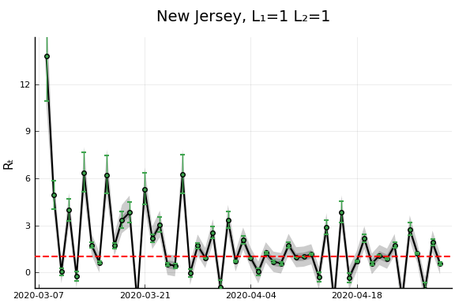
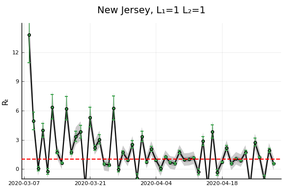


 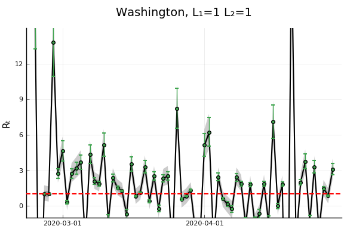
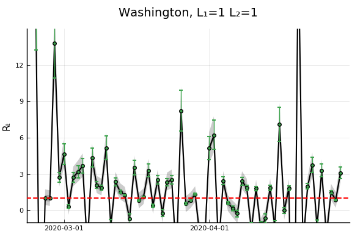


 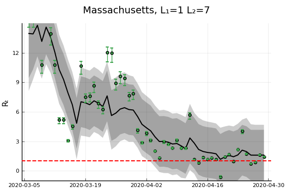
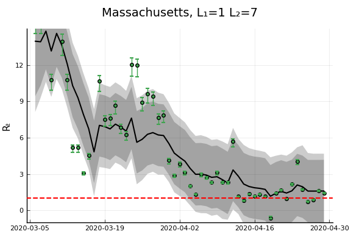  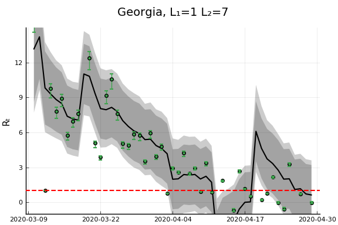 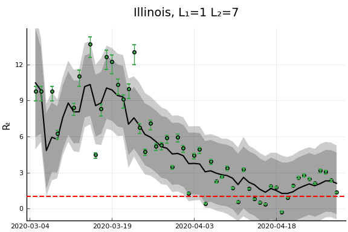
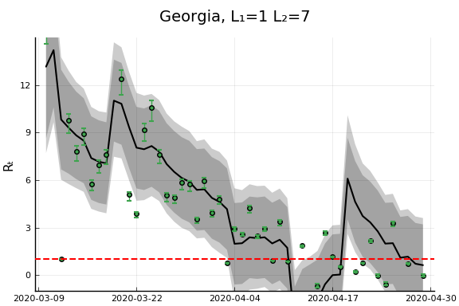 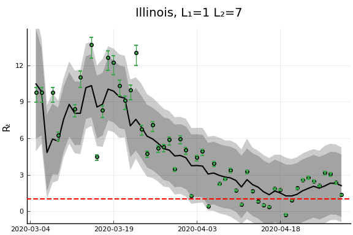


 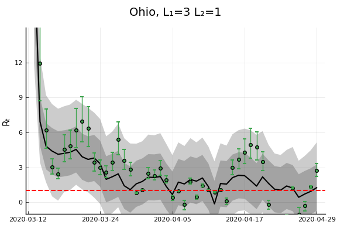
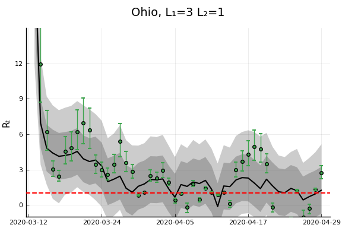

 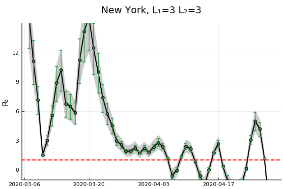
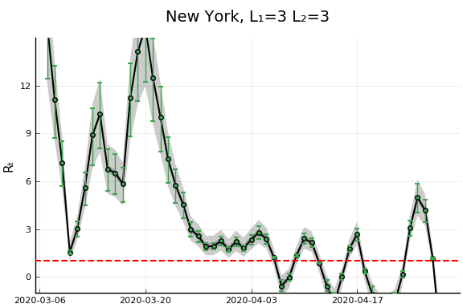  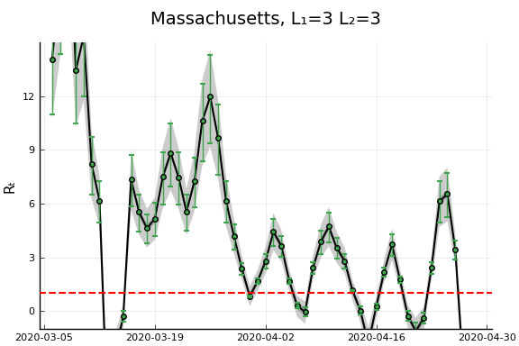 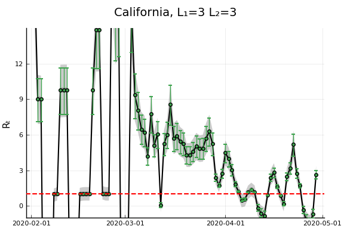
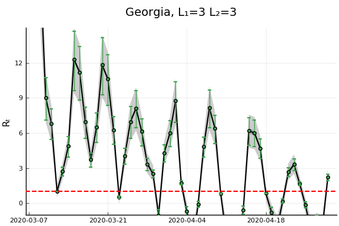
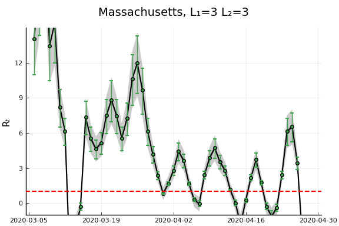 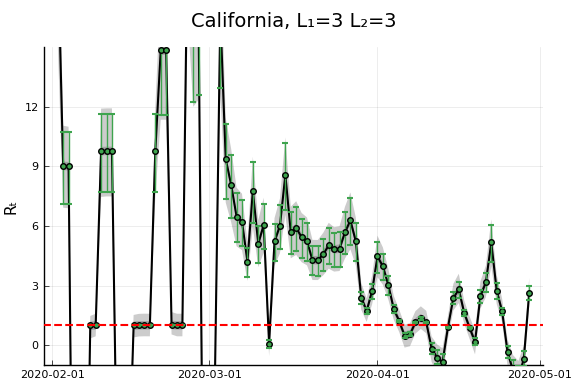
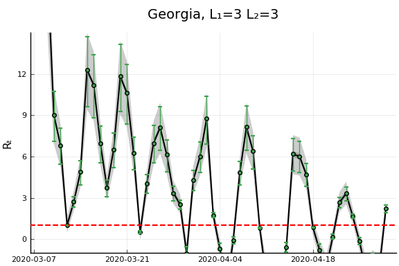 


 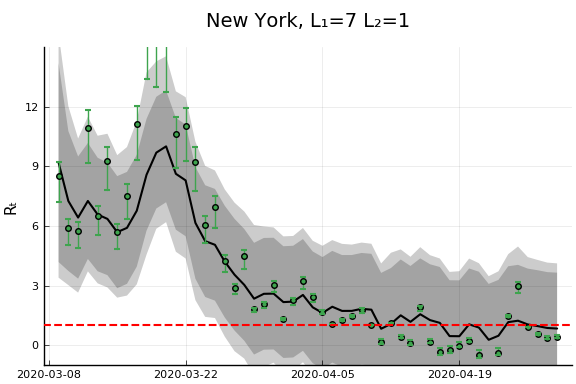
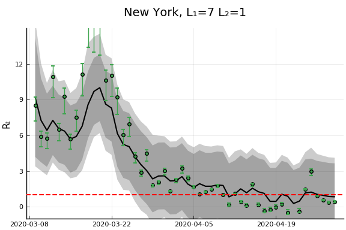 


 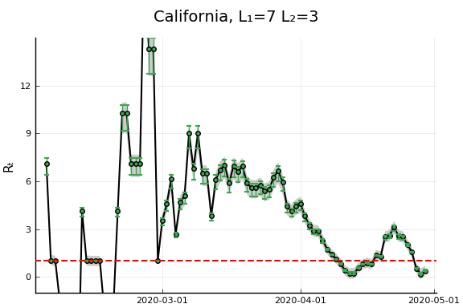
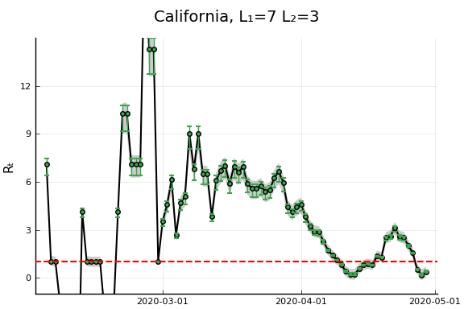


 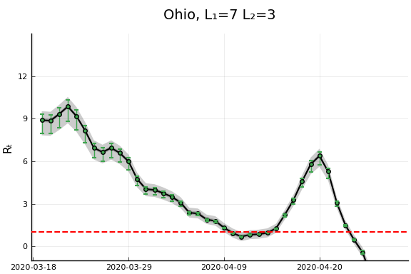
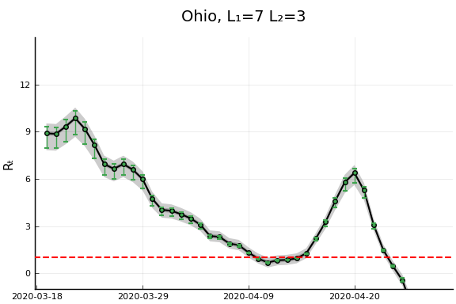


 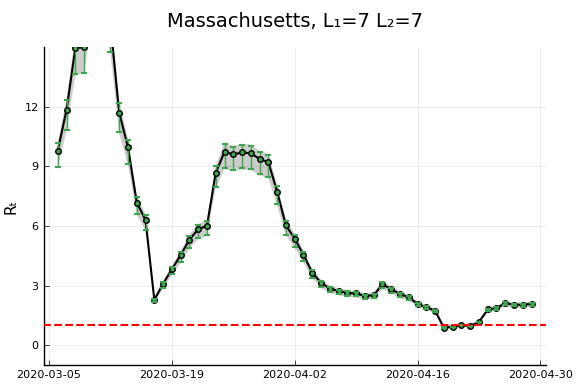
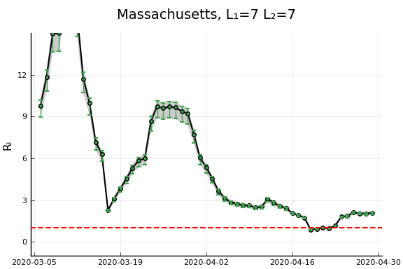  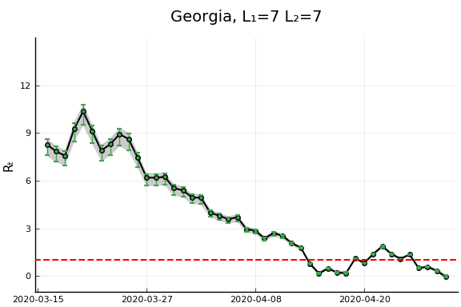
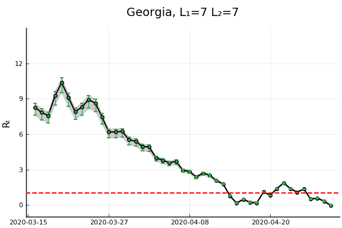

 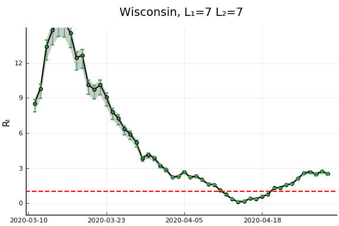
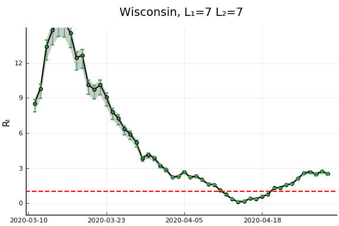